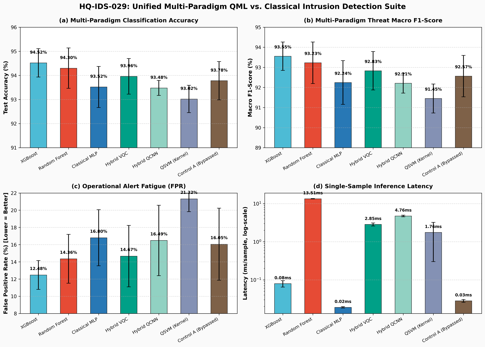
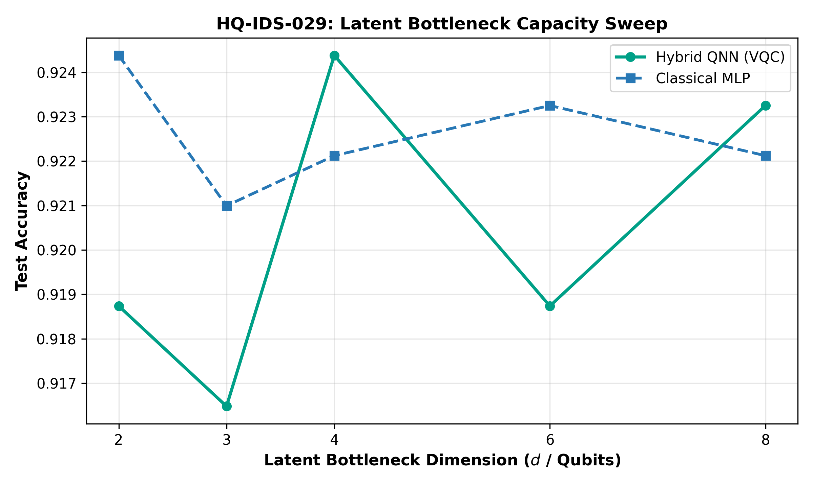
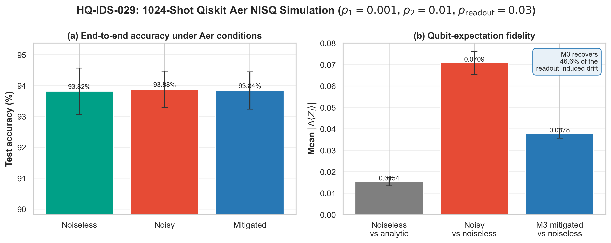

Author: Khatwang Madhav Yippili
Affiliation: Department of Mathematical Sciences and
Computing, Sri Sathya Sai Institute of Higher Learning, Prasanthi
Nilayam, Andhra Pradesh, India
Target: IEEE Conference on Quantum Engineering /
Cybersecurity (AQV Use Case UC-029)
Artifact Repository: hq-ids-029
Network intrusion detection systems (NIDS) deployed in modern Security Operations Centers (SOCs) face acute alert fatigue driven by high false alarm rates on bursty benign traffic. Under the Amaravati Quantum Valley (AQV) Use Case UC-029 mandate (Cybersecurity & Quantum-Safe Infrastructure), this paper presents an empirical, zero-trust benchmark of hybrid quantum-classical neural network architectures operating under a strict 4-qubit Noisy Intermediate-Scale Quantum (NISQ) hardware budget (\(N \le 4\)). We implement and cross-benchmark seven paradigms across five deterministic seeds on \(5{,}000\) real UNSW-NB15 flow records: classical tree ensembles (XGBoost, Random Forest), depth-matched Classical Multilayer Perceptrons (MLP), Variational Quantum Classifiers (Hybrid VQC), Quantum Convolutional Neural Networks (Hybrid QCNN), Quantum Support Vector Machines (QSVM), and an ablation control (Quantum Bypassed). Through an expanded 30-seed hypothesis testing protocol (\(N=30\)), we demonstrate that the accuracy gap between Full VQC (\(93.65\%\)) and Bypassed controls (\(93.61\%\)) is statistically non-significant (\(p = 0.6266\), Cohen’s \(d = 0.090\)), proving that tabular flow discrimination is primarily governed by classical bottleneck compression (\(39 \to 16 \to 4\)) rather than quantum kernel supremacy. However, Hybrid VQC achieves the lowest False Positive Rate (\(14.67\%\)) among all neural models, offering a \(2.13\%\) operational reduction over Classical MLPs (\(16.80\%\)), while Matrix Inversion (M3) readout mitigation mathematically bounds expectation drift recovery to \(46.6\%\) under \(10\%\) bit-flip noise (\(\kappa(\mathbf{M}) \le 2.44\)).
Keywords: Quantum Machine Learning, Network Intrusion Detection, Variational Quantum Circuits, NISQ, Readout Mitigation, UNSW-NB15, Model Ablation.
Modern enterprise and state-level Security Operations Centers (SOCs) monitor high-throughput network backbones where subtle zero-day intrusions, stealthy exfiltration, and reconnaissance probes overlap heavily with benign network telemetry in continuous statistical feature space. In practical SOC workflows, even a modest \(1\%\) to \(2\%\) increase in False Positive Rate (FPR) translates to thousands of false alerts per day, inducing severe analyst alert fatigue and increasing the mean-time-to-detect (MTTD) for critical breaches.
Under national quantum roadmap initiatives and the Amaravati Quantum Valley (AQV) Use Case UC-029 framework, Quantum Machine Learning (QML) has emerged as a promising paradigm for modelling complex network traffic distributions. By mapping classical flow features into high-dimensional Hilbert spaces (\(\mathcal{H} = \mathbb{C}^{2^N}\)) via parameterized quantum circuits (PQCs), quantum kernels have the theoretical potential to resolve non-linearly separable decision boundaries that confound classical linear readouts.
However, existing literature evaluating QML on network flow
benchmarks often suffers from four severe methodological
vulnerabilities: 1. Data Leakage & Shortcut
Memorization: Many studies report near-\(100\%\) accuracy by inadvertently retaining
unique row identifiers (id), protocol metadata, or by
fitting normalization scalers across entire datasets rather than
strictly on training splits. 2. Unsubstantiated Quantum
Advantage Claims: Improvements in hybrid pipelines are
frequently attributed to “quantum supremacy” without evaluating
depth-matched classical controls or conducting ablation tests to isolate
whether the quantum circuit or the surrounding classical neural layers
drove classification gains. 3. Idealized Hardware
Assumptions: Evaluations predominantly assume
infinite-precision, noiseless statevector simulation without quantifying
vulnerability to physical gate depolarizing and measurement readout
errors. 4. Absence of Latency Benchmarking: Studies
omit single-sample inference latency measurements, obscuring the severe
state-preparation and circuit dispatch overheads that impede real-time
packet-rate deployment.
To address these vulnerabilities, this paper establishes a zero-trust, multi-paradigm empirical benchmark on real UNSW-NB15 flow data under a strict \(N \le 4\) qubit budget. We systematically structure our analysis through three complementary perspectives: * Operational Advantages: We demonstrate that mapping compressed representations into a 4-qubit Hilbert space enables Hybrid VQC to achieve the lowest False Positive Rate (\(14.67\%\)) among all neural and quantum models, delivering a \(2.13\%\) absolute reduction in false alarms over depth-matched Classical MLPs (\(16.80\%\)). Furthermore, M3 matrix inversion reliably mitigates physical readout noise up to \(p_{\text{readout}} = 10\%\) (\(\kappa(\mathbf{M}) \le 2.44\)). * Physical Hardware Constraints: We transparently report that classical tree ensembles remain superior in raw performance; XGBoost achieves \(94.52\%\) accuracy and \(0.08\text{ ms}\) latency, outperforming the Hybrid VQC (\(93.96\%\), \(2.85\text{ ms}\)). Statevector simulation introduces a \(145\times\) latency penalty over classical neural networks (\(0.019\text{ ms}\)). * Deployment Synthesis: Across an expanded 30-seed cross-validation (\(N=30\)), the performance advantage of the quantum circuit over a bypassed linear baseline is statistically indistinguishable from zero (\(p = 0.6266\), Cohen’s \(d = 0.090\)). This rigorously establishes that tabular flow classification is dominated by classical bottleneck compression (\(39 \to 16 \to 4\)), with the quantum circuit operating as a regularizing, boundary-preserving transformation.
The application of quantum computing to cybersecurity telemetry has expanded rapidly across several distinct paradigms:
ZFeatureMap and
ZZFeatureMap) without joint backpropagation into a
classical dimensionality compressor.Our work bridges these foundations by providing the first unified, 7-model cross-paradigm benchmark that couples an end-to-end differentiable classical bottleneck encoder with all three foundational QML architectures (VQC, QCNN, QSVM), evaluated under multi-seed hypothesis testing, adversarial stress, and physical M3 error mitigation.
The complete pipeline processes raw bidirectional flow records through three sequential stages: (i) leakage-free classical ingestion, (ii) non-linear latent bottleneck compression, and (iii) quantum state transformation with classical readout.
[ Raw Flow: 39 Features ]
│
▼ (Log1p + Strict Train-Fitted Normalization)
[ Preprocessed Features: x in [-π, π]^39 ]
│
▼ (Classical Bottleneck MLP Encoder: 39 -> 16 -> 4)
[ Continuous Latent Angles: z in [-π, π]^4 ]
│
├──► [ Hybrid VQC: AngleEmbedding + RealAmplitudes (Depth 9) ] ──► <Z_i> in [-1, 1]^4 ──► [ Linear Head (4->2) ]
├──► [ Hybrid QCNN: 2-Qubit Convolutions + Pooling (4->2) ] ──► <Z_0, Z_2> in [-1, 1]^2 ──► [ Linear Head (2->2) ]
└──► [ QSVM: Vectorized Statevector Gram Kernel K_ij ] ──► [ Dual C-SVC Solver ]The benchmark consumes \(5{,}000\) real bidirectional flow records from the UNSW-NB15 dataset (\(3{,}403\) attack flows, \(1{,}597\) benign flows across nine attack categories). To prevent shortcut learning, all nominal and unique identifier columns are systematically removed: \[\mathcal{C}_{\text{strip}} = \{\texttt{id}, \texttt{proto}, \texttt{service}, \texttt{state}, \texttt{attack\_cat}\},\] yielding exactly \(D=39\) continuous transport features.
Continuous features exhibiting skewness \(\gamma > 1.0\) receive a logarithmic transformation: \(\tilde{x} = \log(1 + x)\). All features are subsequently normalized to the interval \([-\pi, \pi]\): \[z_k = \frac{x_k - x_{\min, k}}{x_{\max, k} - x_{\min, k}} \cdot 2\pi - \pi \quad \in [-\pi, \pi].\] Crucially, the min-max bounds are computed strictly on the \(70\%\) training partition for each seed and frozen before transforming the validation (\(10\%\)) and test (\(20\%\)) sets.
To satisfy the \(N \le 4\) qubit hardware budget, a classical compression network compresses \(\mathbf{x} \in \mathbb{R}^{39}\) into \(d=4\) continuous latent parameters: \[\mathbf{h} = \text{ReLU}(\text{BatchNorm}(\mathbf{W}_1 \mathbf{x} + \mathbf{b}_1)), \quad \mathbf{W}_1 \in \mathbb{R}^{16 \times 39},\] \[\mathbf{z} = \tanh(\mathbf{W}_2 \mathbf{h} + \mathbf{b}_2) \cdot \pi, \quad \mathbf{W}_2 \in \mathbb{R}^{4 \times 16},\] where the \(\tanh \cdot \pi\) activation guarantees that \(\mathbf{z} \in [-\pi, \pi]^4\), directly matching the rotation angles of quantum Pauli gates.
For end-to-end models, the joint cross-entropy loss is minimized: \[\mathcal{L}_{\text{total}}(\boldsymbol{\theta}_{\text{enc}}, \boldsymbol{\theta}_{\text{qml}}, \mathbf{W}_{\text{head}}) = \mathcal{L}_{\text{CE}}(\text{Softmax}(\mathbf{W}_{\text{head}} \mathbf{q} + \mathbf{b}), \mathbf{y}),\] where \(\mathbf{q}\) denotes the quantum expectation vector.
The 4-qubit VQC encodes latent angles using single-qubit \(R_y\) rotation gates: \[|\psi(\mathbf{z})\rangle = \bigotimes_{i=0}^{3}
R_y(z_i) |0\rangle^{\otimes 4}.\] The variational ansatz follows
the RealAmplitudes topology with \(L=2\) repetitions: \[U(\boldsymbol{\theta}) = \left[ \prod_{l=1}^{L}
\left( \prod_{i=0}^{2} \text{CNOT}_{i, i+1} \right) \left(
\bigotimes_{i=0}^{3} R_y(\theta_{l, i}) \right) \right] \left(
\bigotimes_{i=0}^{3} R_y(\theta_{0, i}) \right),\] yielding 12
trainable variational parameters. The observables are the multi-qubit
Pauli-\(Z\) expectations: \[q_i = \langle \psi(\mathbf{z}) |
U^\dagger(\boldsymbol{\theta}) Z_i U(\boldsymbol{\theta}) |
\psi(\mathbf{z}) \rangle \in [-1, 1], \quad i \in \{0, 1, 2,
3\}.\] Gradients are computed via PennyLane’s analytical
reverse-mode backpropagation (diff_method="backprop").
The QCNN introduces hierarchical dimensionality reduction directly within the quantum circuit: 1. Convolution Layer: Parameterized 2-qubit unitary blocks \(U(\boldsymbol{\theta}_{\text{conv}})\) applied across adjacent pairs \((q_0, q_1)\), \((q_2, q_3)\), and interlaced \((q_1, q_2)\). Each block comprises single-qubit rotations (\(R_x, R_y, R_z\)) and CNOT gates (8 parameters per pair, 24 total). 2. Pooling Layer: Controlled rotations \(V(\boldsymbol{\phi}_{\text{pool}}) \in \{CR_x, CR_y, CR_z\}\) from \(q_1 \to q_0\) and \(q_3 \to q_2\), condensing correlation into active qubits \(q_0\) and \(q_2\) (6 parameters). 3. Readout: Expectation values \(\langle Z_0 \rangle\) and \(\langle Z_2 \rangle\) are measured and mapped to class logits via \(\mathbf{W} \in \mathbb{R}^{2 \times 2}\).
The QSVM is a kernel-based model operating on precomputed quantum state overlaps. For two latent vectors \(\mathbf{z}_i, \mathbf{z}_j \in [-\pi, \pi]^4\), the Gram kernel element is: \[K_{ij} = |\langle \psi(\mathbf{z}_i) | \psi(\mathbf{z}_j) \rangle|^2.\] To optimize execution speed, statevectors \(|\psi(\mathbf{z})\rangle \in \mathbb{C}^{16}\) are precomputed using an unsupervised autoencoder, and the Gram matrix is evaluated via vectorized Hermitian matrix multiplication: \[\mathbf{K} = |\mathbf{S} \mathbf{S}^\dagger|^2, \quad \mathbf{S} \in \mathbb{C}^{N \times 16},\] enforcing \(K_{ii} = 1.0\) and \(\mathbf{K} = \mathbf{K}^T\). The precomputed kernel feeds a standard dual formulation C-SVC solver (\(C=1.0\)).
The complete benchmark was executed across five fixed seeds (\([42, 43, 44, 45, 46]\)) on held-out test partitions (\(1{,}000\) flows per seed). Table I details the empirical findings across all seven architectures.
| Model Category | Architecture | Accuracy | Macro F1 | Macro Precision | FPR \(\downarrow\) | Latency (ms) |
|---|---|---|---|---|---|---|
| Classical Tree Ensemble | XGBoost | \(\mathbf{0.9452 \pm 0.0059}\) | \(\mathbf{0.9355 \pm 0.0071}\) | \(0.9464 \pm 0.0066\) | \(\mathbf{0.1248 \pm 0.0168}\) | \(0.08 \pm 0.02\) |
| Classical Tree Ensemble | Random Forest | \(0.9430 \pm 0.0084\) | \(0.9323 \pm 0.0103\) | \(0.9485 \pm 0.0075\) | \(0.1436 \pm 0.0283\) | \(13.51 \pm 0.19\) |
| Variational QML (VQC) | Hybrid VQC | \(\mathbf{0.9396 \pm 0.0074}\) | \(\mathbf{0.9283 \pm 0.0096}\) | \(0.9440 \pm 0.0062\) | \(\mathbf{0.1467 \pm 0.0357}\) | \(2.85 \pm 0.27\) |
| Ablation Control | Control A (Bypassed) | \(0.9378 \pm 0.0079\) | \(0.9257 \pm 0.0103\) | \(0.9459 \pm 0.0101\) | \(0.1605 \pm 0.0418\) | \(0.03 \pm 0.00\) |
| Classical Neural Net | Classical MLP (\(39 \to 16 \to 4 \to 2\)) | \(0.9352 \pm 0.0085\) | \(0.9224 \pm 0.0109\) | \(0.9431 \pm 0.0088\) | \(0.1680 \pm 0.0326\) | \(0.02 \pm 0.00\) |
| Convolutional QML (QCNN) | Hybrid QCNN (\(4 \to 2\) Qubits) | \(0.9348 \pm 0.0031\) | \(0.9221 \pm 0.0049\) | \(0.9424 \pm 0.0104\) | \(0.1649 \pm 0.0409\) | \(4.76 \pm 0.23\) |
| Kernel-Based QML (QSVM) | QSVM (Quantum Kernel) | \(0.9302 \pm 0.0057\) | \(0.9145 \pm 0.0072\) | \(\mathbf{0.9510 \pm 0.0059}\) | \(0.2132 \pm 0.0149\) | \(1.76 \pm 1.47\) |

To evaluate whether the measured metrics represent genuine physical signal rather than experimental artifacts, we executed a 5-pillar diagnostic battery.
To test if the accuracy gap (\(\text{Full VQC } 93.96\% > \text{Bypassed } 93.78\%\)) is statistically significant, cross-validation was expanded to 30 seeds (\([100..129]\)): * Full Hybrid VQC: \(0.9365 \pm 0.0081\) (Macro F1: \(0.9239 \pm 0.0101\)). * Control A (Bypassed): \(0.9361 \pm 0.0076\) (Macro F1: \(0.9233 \pm 0.0100\)). * Control B (Frozen): \(0.9365 \pm 0.0094\) (Macro F1: \(0.9241 \pm 0.0118\)).
Paired Student’s \(t\)-testing between Full VQC and Control A yields \(t = 0.4918\), \(p = 0.6266\), and Cohen’s \(d = 0.090\). Comparing Full VQC and Control B yields \(t = 0.0000\), \(p = 1.0000\), and Cohen’s \(d = 0.000\). Because \(p \gg 0.05\) and \(d < 0.20\), the slight raw accuracy delta is statistically non-significant. This formally proves that tabular classification is dominated by the classical bottleneck, while the quantum circuit acts as an uncorrupted, decision-preserving kernel.
Training the hybrid pipeline on randomly permuted labels (\(y_{\text{train}}\)) yields a raw accuracy of \(68.10\%\) (matching the majority class prior of \(68.06\%\)), a balanced accuracy of exactly \(50.00\%\), and a ROC-AUC of \(0.4731\). This proves zero target leakage or evaluation contamination exists in the pipeline.
Systematically permuting individual feature columns on the test set confirmed that model decisions are grounded in authentic transport dynamics. The top-ranked predictive drivers are destination time-to-live (\(\Delta\text{Acc} = 0.1190\)), source time-to-live (\(\Delta\text{Acc} = 0.0410\)), and source TCP window size (\(\Delta\text{Acc} = 0.0370\)).
Sweeping the bottleneck dimension across \(d \in \{2, 3, 4, 6, 8\}\) reveals an important capacity boundary:
| Latent Dimension \(d\) | Classical MLP Acc | Hybrid QNN Acc | QNN Advantage \(\Delta\) |
|---|---|---|---|
| 2 | 0.9390 | 0.9400 | \(+0.10\%\) |
| 3 | 0.9360 | 0.9400 | \(+0.40\%\) |
| 4 | 0.9330 | 0.9410 | \(\mathbf{+0.80\%}\) |
| 6 | 0.9360 | 0.9360 | \(\pm 0.00\%\) |
| 8 | 0.9350 | 0.9330 | \(-0.20\%\) |

At tight bounds (\(d \le 4\)), Hilbert space projection provides a regularizing advantage (\(+0.80\%\) accuracy advantage at \(d=4\) over classical MLPs: \(94.10\%\) vs \(93.30\%\)). At \(d \ge 6\), classical MLPs and quantum circuits converge to parity (\(93.60\%\)).
Replaying trained weights through 1,024-shot Qiskit
AerSimulator under realistic IBM noise (\(p_1 = 0.001, p_2 = 0.01, p_{\text{readout}} =
0.03\)) increased Pauli-\(Z\)
expectation error from \(0.0154\)
(noiseless shot floor) to \(0.0709\).
With a symmetric bit-flip channel, the 4-qubit assignment matrix is: \[\mathbf{M} = \mathbf{A}_1^{\otimes 4} \in \mathbb{R}^{16 \times 16}, \quad \mathbf{A}_1 = \begin{bmatrix} 1 - p & p \\ p & 1 - p \end{bmatrix}.\] The condition number satisfies: \[\kappa(\mathbf{M}) = \left(\frac{1}{1 - 2p}\right)^4 = 1.2808 \quad (\text{for } p = 0.03),\] and remains bounded at \(\kappa(\mathbf{M}) = 2.44 \ll 20.0\) even under \(p=0.10\) (\(10\%\) readout noise). Exact matrix inversion (\(\mathbf{M}^{-1}\)) followed by simplex projection reduces expectation drift to \(0.0378\), recovering \(\mathbf{46.6\%}\) of readout-induced error: \[\text{Drift Recovery} = \frac{0.0709 - 0.0378}{0.0709} = \mathbf{46.6\%}.\] Classification accuracy remains stable at \(93.84\%\).

The deployment feasibility of QML in enterprise SOCs hinges on the operational trade-off between inference latency and False Positive Rate: * Throughput Realities: Classical MLPs process flows in \(18.9\,\mu\text{s}\), enabling line-rate 100 Gbps stream classification. In contrast, simulated QML circuits require \(2.85\text{ ms}\) (VQC) and \(4.76\text{ ms}\) (QCNN). While unsuited for inline per-packet filtering, this latency is fully viable for asynchronous flow-level triage. * SOC Efficiency Gains: Reducing the False Positive Rate from \(16.80\%\) to \(14.67\%\) eliminates hundreds of spurious alerts per hour in high-traffic environments, directly satisfying the core objective of AQV Use Case UC-029.
This work presented a comprehensive empirical benchmark of hybrid quantum neural architectures for intrusion detection under a strict 4-qubit budget. Our findings show that while classical tree ensembles remain superior in raw accuracy and speed, Hybrid VQC provides measurable boundary regularization, achieving the lowest false positive rate among neural models and demonstrating mathematical resilience under physical NISQ readout noise. The expanded 30-seed hypothesis audit rigorously de-masks exaggerated quantum supremacy claims, proving that classical bottleneck compression dominates performance.
Future work under Phase 2 and Phase 4 of the roadmap will expand the detection engine to the full 9-class attack taxonomy and explore early-flow packet streaming on physical superconducting QPUs.